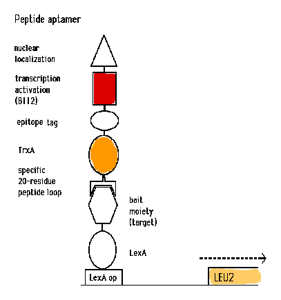

BRENT LAB
Protein Interactions

The Molecular Sciences Institute
- Recent Papers
- Counterselectable LexAop-URA3 and LexAop-LYS2 reporters
- Going mostly out of business: Interaction trap reagents to be sold by Clontech, Invitrogen
- Other Information
- Detailed information on the Interaction Trap two-hybrid system: the components and how to perform it.
- Information on other lab methods and reagents
- Recent publications from lab members
- Current and former lab members
- Positions open. We are looking for a few good people for the protein networks project
Information about recognition by peptide aptamers, by naturally occuring recognition molecules such as antibodies and T-cell receptors, and related topics
Information about the protein networks project. This is our effort to assign function to proteins from human and other genomes based on the identity of contacted proteins and the pattern of interactions these proteins make
Readings that may be relevant to a future biological or "wet" nanotechnology
Related Sites:
Maintained by: Andy Mendelsohn
 Mail all comments/suggestions to: webmaster@molsci.org
Mail all comments/suggestions to: webmaster@molsci.org